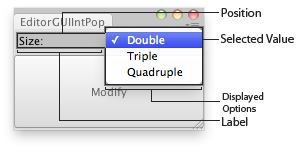

EditorGUI.IntPopup
public static int IntPopup(Rect position,
int selectedValue,
string[] displayedOptions,
int[] optionValues,
GUIStyle style = EditorStyles.popup);
public static int IntPopup(Rect position,
int selectedValue,
GUIContent[] displayedOptions,
int[] optionValues,
GUIStyle style = EditorStyles.popup);
public static int IntPopup(Rect position,
string label,
int selectedValue,
string[] displayedOptions,
int[] optionValues,
GUIStyle style = EditorStyles.popup);
public static int IntPopup(Rect position,
GUIContent label,
int selectedValue,
GUIContent[] displayedOptions,
int[] optionValues,
GUIStyle style = EditorStyles.popup);
Parameters
| position | Rectangle on the screen to use for the field. | |
| label | Optional label in front of the field. | |
| selectedValue | The value of the option the field shows. | |
| displayedOptions | An array with the displayed options the user can choose from. | |
| optionValues | An array with the values for each option. If optionValues a direct mapping of selectedValue to displayedOptions is assumed. | |
| style | Optional GUIStyle. |
Returns
int The value of the option that has been selected by the user.
Description 描述
Makes an integer popup selection field.
Takes the currently selected integer as a parameter and returns the integer selected by the user.

Int Popup in an Editor Window.
using UnityEngine; using UnityEditor;
// Multiplies the scale of the selected transform.
class EditorGUIIntPopup : EditorWindow { int selectedSize = 1; string[] names = { "Double", "Triple", "Quadruple" }; int[] sizes = { 2, 3, 4 };
[MenuItem("Examples/Editor GUI Int Popup usage")] static void Init() { EditorWindow window = GetWindow<EditorGUIIntPopup>(); window.position = new Rect(0, 0, 180, 60); window.Show(); }
void OnGUI() { selectedSize = EditorGUI.IntPopup( new Rect(3, 3, position.width - 6, 20), "Size:", selectedSize, names, sizes);
if (GUI.Button(new Rect(0, 25, position.width, position.height - 27), "Modify")) { Rescale(); } }
void Rescale() { if (Selection.activeTransform) { Selection.activeTransform.localScale *= selectedSize; } else { Debug.LogError("No Object selected, please select an object to scale."); } } }
public static void IntPopup(Rect position,
SerializedProperty property,
GUIContent[] displayedOptions,
int[] optionValues,
GUIContent label = null);
Parameters
| position | Rectangle on the screen to use for the field. | |
| property | The SerializedProperty to use for the control. | |
| displayedOptions | An array with the displayed options the user can choose from. | |
| optionValues | An array with the values for each option. If optionValues a direct mapping of selectedValue to displayedOptions is assumed. | |
| label | Optional label in front of the field. |